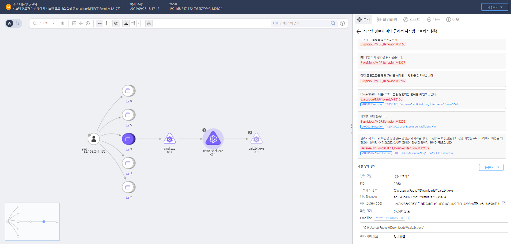

MITRE ATT&CK 액션을 기준으로 대응 방안을 작성
 https://172.18.10.125:8903/#/analysis/alert/66f3d441002dc795000000ef
시스템 분석 및 감염 여부 확인 다운로드된 파일의 확장자가 이중 확장자(ex: .txt.exe, .jpg.scr)를 가지고 있는지 확인하고, 이러한 파일이 실행된 시스템의 로그 및 히스토리를 조사하여 의심스러운 활동이 있었는지 확인합니다. 감염된 파일이 실행된 시스템에서 실행된 프로세스 목록을 확인하고, 의심스러운 프로세스가 실행 중이거나 최근에 종료된 경우 해당 프로세스를 격리하고 분석합니다. 시스템의 중요한 파일 및 레지스트리 변경 사항을 점검하여, 이중 확장자를 가진 실행 파일로 인해 시스템 설정이 변경되었는지 확인합니다.
네트워크 트래픽 및 파일 전송 경로 조사 다운로드된 파일이 네트워크를 통해 전송된 경우, 네트워크 트래픽 로그를 분석하여 파일이 전송된 경로와 출발지 및 목적지 IP 주소를 확인합니다. 파일이 전송된 네트워크 경로 및 서버를 추적하여, 동일한 파일이 다른 시스템에도 전송되었는지 확인하고, 필요한 경우 해당 네트워크 세그먼트나 서버를 격리합니다. 파일이 전송된 경로를 통해 추가적인 악성 파일이 다운로드되었는지 조사하고, 관련된 파일을 전부 탐지 및 격리하여 감염 확산을 방지합니다.
실행 파일 및 의심스러운 활동 포렌식 분석 이중 확장자를 가진 실행 파일을 안전한 분석 환경(샌드박스, 격리된 VM 등)에서 분석하여 악성 코드의 의도를 파악합니다. 파일의 동작, 네트워크 활동, 파일 생성 및 레지스트리 변경 사항 등을 조사합니다. 파일이 실행된 후 생성된 프로세스, DLL 로드, 파일 생성 및 변경, 네트워크 접속 시도 등 시스템 활동을 분석하여 공격자가 수행한 행동을 파악합니다. 파일이 시스템에 추가적으로 설치한 악성 프로그램이나 설정을 모두 파악하고, 이를 제거하거나 격리하여 시스템을 복구합니다.
손상된 시스템 격리 및 복구 이중 확장자를 가진 파일이 다운로드되었거나 실행된 시스템을 네트워크에서 격리하여 추가적인 악성 코드 확산 및 데이터 유출을 방지합니다. 감염된 시스템의 백업 및 로그를 통해 악성 코드가 설치되기 이전의 상태로 복원하거나, 전체 시스템을 초기화하고 중요한 데이터만 복구합니다. 악성 코드가 제거된 후 시스템을 최신 보안 패치 상태로 유지하고, 향후 동일한 공격이 발생하지 않도록 보안 정책을 강화합니다.
침해 사고 보고 및 추가적인 조치 침해 사고가 발생한 경우, 내부 보안 팀 및 법 집행 기관에 즉각적으로 보고하고, 침해 사고의 범위를 정확히 파악하여 추가적인 피해를 방지합니다. 공격자가 이중 확장자를 가진 파일을 다운로드 및 실행시키기 위해 사용한 기술(소셜 엔지니어링, 이메일 피싱 등)을 파악하고, 해당 기술에 대해 내부 직원들에게 교육을 실시하여 재발을 방지합니다.
파일 확장자 및 실행 정책 강화
안티바이러스 및 EDR 솔루션 활용
사용자 교육 및 인식 강화
이메일 및 웹 필터링 정책 설정
파일 무결성 검사 및 애플리케이션 제어
Action 실행시 함께 영향을 받는 다른 Techniqes
| ATT&CK |
|---|
| T1204.002 |
| T1059.003 |
| D3FEND |
|---|
| Techniques name |